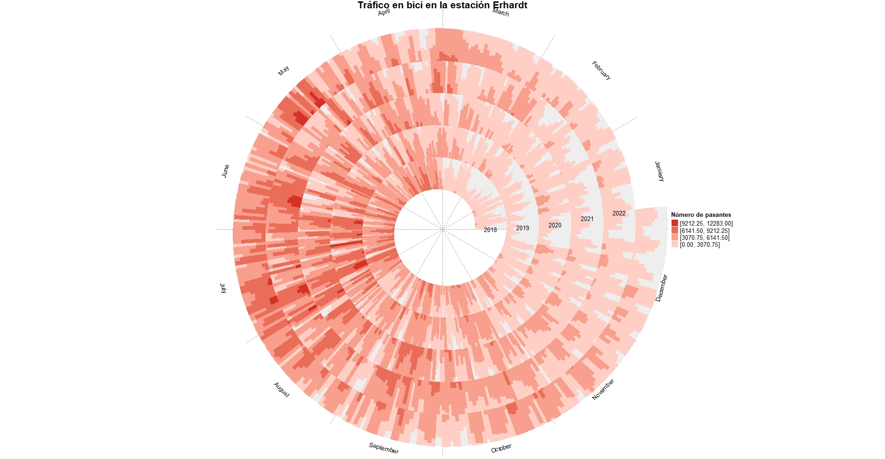

Visualización 3: Spiral Plot
Fuente datos:
Los datos utilizados han sido obtenidos del portal de datos de la ciudad de München, donde se han extraido los datos de las estaciones de conteo de bicicletas. En concreto se han utilizado los datos de la estación de conteo en la calle Eberhardstrasse en los años 2018 a 2022.
Open Data München - Daten der Raddauerzählstellen
Creada con:
La visualización de los datos en forma de spiral plot ha sido creada mediante R-Studio. Para ello, se utilizó la library
spiralize.
